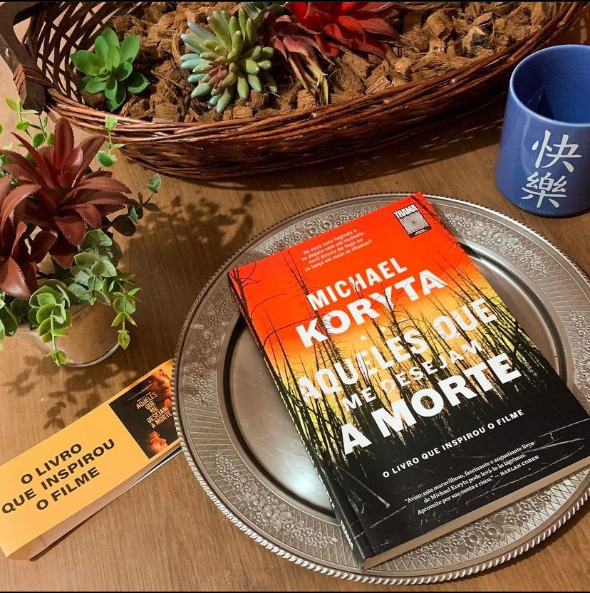

Aqueles que Me Desejam a Morte
(Michael Koryt - Trama)
⭐⭐⭐⭐
Quando Jace Wilson, um jovem de catorze anos, testemunha um brutal assassinato, acaba tendo de mergulhar em uma nova vida: criou outra identidade e se escondeu em um programa para adolescentes problemáticos no deserto. O plano é tirar Jace do circuito enquanto a polícia vai em busca dos dois assassinos. Mas este é apenas o começo do pesadelo: os criminosos estão eliminando qualquer um que cruze seu caminho. Agora, tudo o que resta entre eles e o garoto são Ethan e Allison Serbin, responsáveis pelo programa de sobrevivência no deserto; Hannah Faber, que ocupa uma solitária torre de vigia de incêndio; e quilômetros sem fim das montanhas desoladas de Montana. O tempo está correndo, as montanhas estão queimando ― e aqueles que desejam a morte de Jace Wilson não estão tão distantes assim.
Um livro de tirar o fôlego !Fui surpreendida pela narrativa altamente descritiva mas, que se faz totalmente necessária para a Trama. Michael Koryt criou personagens palpáveis aos quais nos conectamos e vamos torcer por todo o desenrolar da história, e que história! Alguns questionamentos se fazem necessário: Até onde você arriscaria sua vida para ajudar a colocar bandidos perigosos e inescrupulosos atrás das grades ? Jace, apesar da pouca idade percebeu que valeria a pena se arriscar para que a verdade chegue às autoridades. O livro é repleto de crimes, afinal os dois irmãos que cometeram o assassinato são psicopatas e tem uma maneira peculiar de se comunicarem. O suspense é criado durante toda a trama e aqui, temos um belo exemplo do que seria ajudar o próximo, não importa o que aconteça.
Quero destacar também a edição maravilhosa pela Editora Trama a, que entrega um livro fascinante!
Do livro para as telonas: O filme baseado no romance de Michael Koryt foi lançado esse ano pelas mãos do do diretor/roteirista Taylor Sheridan, e conta com Angelina Jolie no elenco.